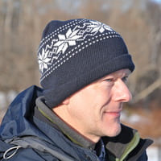

| Program | CFP | Dates | Organization | Venue |
We are excited to announce the National Conference on Star Formation Studies in India, scheduled to take place from May 3-6, 2025 (tentative), jointly organized by CHRIST (Deemed to be University), Bangalore and the Indian Institute of Astrophysics, Bangalore.
In recent years, star formation research has been propelled forward by data from groundbreaking instruments like the Atacama Large Millimeter/submillimeter Array (ALMA) and the James Webb Space Telescope (JWST). This conference will highlight the latest advancements in the field of star and planet formation, with a focus on research being conducted within India.
The conference will encompass a wide range of observational and theoretical insights into star and planet formation, providing a platform for collaboration and discussion among researchers.
We look forward to your participation!
In this conference, we invite the astronomy and astrophysics research community to submit works related to the latest advancements in star formation studies, focusing on the following broad topic areas:
We encourage submissions that explore real-world observations and theoretical models, as well as those that address the challenges and breakthroughs in these areas. The aim is to foster a dynamic discussion on the latest research, emerging techniques, and the development of novel instrumentation to study star formation.
The list above is not exhaustive, and we welcome contributions that push the boundaries of knowledge and understanding in all areas related to star and planet formation.
We invite the submission of abstracts for the Star Formation Studies in India 2025 conference. Submissions should be related to one of the following general topics:
The abstract should be prepared in LaTeX using the provided template. The template ensures uniformity and compliance with the conference standards. Once your abstract is ready, fill out the Google Sheet [Insert Link to Google Sheet] with the required details and upload your PDF abstract (generated using the LaTeX template) as an attachment.
The abstract submission deadline is [Insert Deadline Date]. All submissions will be reviewed by the conference organizing committee, and authors will be notified of acceptance for either a talk or poster presentation.
We look forward to your contributions!
All questions about submissions should be emailed to strl2022 at easychair.org.
Be mindful of the following dates:
Note: all deadlines are AoE (Anywhere on Earth).
The accepted papers will appear on the workshop website. We also intend to publish the workshop proceedings with CEUR-WS.org; this option will be discussed with the authors of accepted papers and is subject to the CEUR-WS.org preconditions. We note that, as STRL 2022 is a workshop, not a conference, submission of the same paper to conferences or journals is acceptable from our standpoint.
Update: The back-link to the URL of the workshop proceedings published with CEUR-WS.org is now available at http://ceur-ws.org/Vol-3190/.
| 9:00 | Welcome and Coffee & Tea! |
| 9:15 | Visuospatial Commonsense: On Neurosymbolic Reasoning and Learning about Space and Motion | pdf |
| Mehul Bhatt (Örebro University, Sweden) |
| 10:30 | Knowing Earlier What Right Means to You: A Comprehensive VQA Dataset for Grounding Relative Directions via Multi-task Learning | pdf |
|
Kyra Ahrens (University of Hamburg, Germany) Matthias Kerzel (University of Hamburg, Germany) Jae Hee Lee (University of Hamburg, Germany) Cornelius Weber (University of Hamburg, Germany) Stefan Wermter (University of Hamburg, Germany) |
| 11:00 | Coffee & Tea Break |
| 11:15 | Uncertainty-aware Evaluation of Time-series Classification for Online Handwriting Recognition with Domain Shift | pdf |
|
Andreas Klaß (Fraunhofer IIS, Fraunhofer Institute for Integrated Circuits IIS, Erlangen, Germany + LMU Munich, Germany) Sven M. Lorenz (Fraunhofer IIS, Fraunhofer Institute for Integrated Circuits IIS, Erlangen, Germany + LMU Munich, Germany) Martin W. Lauer-Schmaltz (Technical University of Denmark, Denmark) David Rügamer (LMU Munich, Germany + RWTH Aachen, Germany) Bernd Bischl (LMU Munich, Germany) Christopher Mutschler (Fraunhofer IIS, Fraunhofer Institute for Integrated Circuits IIS, Erlangen, Germany) Felix Ott (Fraunhofer IIS, Fraunhofer Institute for Integrated Circuits IIS, Erlangen, Germany + LMU Munich, Germany) |
| 11:45 | Spatial-temporal Transformer Network with Self-supervised Learning for Traffic Flow Prediction | pdf |
|
Zhangzhi Peng (East China Jiaotong University, Nanchang, China) Xiaohui Huang (East China Jiaotong University, Nanchang, China) |
| 12:15 | Lunch Break |
| 13:45 | Learning and Reasoning with Conceptual Space Representations | pdf |
| Zied Bouraoui (Artois University, France) |
| 15:00 | Learning Binary Classification Rules for Sequential Data | pdf |
|
Marine Collery (IBM France Lab, Orsay, France + Inria Saclay Ile-de-France, Palaiseau, France) Remy Kusters (IBM France Lab, Orsay, France + IBM Research, Orsay, France) |
| 15:20 | Coffee & Tea Break |
| 15:30 | Neat and Scruffy: On Computational Generation and Interpretation of Spatial Descriptions | pdf |
| Simon Dobnik (University of Gothenburg, Sweden) |
| 16:45 | Scene Separation & Data Selection: Temporal Segmentation Algorithm for Real-time Video Stream Analysis | pdf |
|
Yuelin Xin (Southwest Jiaotong University, Chengdu, China + University of Leeds, United Kingdom) Zihan Zhou (Southwest Jiaotong University, Chengdu, China) Yuxuan Xia (Southwest Jiaotong University, Chengdu, China) |
| 17:15 | Challenges of Machine Learning Models Acting on Crystalline Materials | pdf |
|
Astrid Klipfel (Artois University, France) Zied Bouraoui (Artois University, France) Yaël Frégier (MIT Department of Mathematics, United States of America) Adlane Sayede (Artois University, France) |
| 17:35 | Joint Discussion and Final Remarks |
|  | |||
| Dr. Michael Sioutis is a Research Fellow with the Faculty of Information Systems and Applied Computer Sciences at the University of Bamberg, Germany. His general interests lie in Artificial Intelligence, Knowledge Representation and Reasoning, Data Mining, Logic Programming, and Semantic Web. His expertise lies in Qualitative Spatial and Temporal Reasoning. | Dr. Zhiguo Long is a Lecturer with the School of Computing and Artificial Intelligence at the Southwest Jiaotong University, Chengdu, China. His research interests include fundamental and practical techniques in Knowledge Representation and Reasoning, especially in Qualitative Spatial and Temporal Reasoning, and representation problems in Machine Learning and Computer Vision. | Dr. John Stell is a Senior Lecturer with the School of Computing at the University of Leeds, United Kingdom. While working at Leeds he has also studied Fine Art part time at Leeds College of Art, graduating with a first class degree in 2010. He has used this interdisciplinary background to combine research in Computer Science with work on spatial concepts in the Digital Humanities. | Prof. Jochen Renz is a Professor with the School of Computing, CECS, at the Australian National University, Australia. Since 2012 he has been organizing the Angry Birds AI Competition, held annually as part of IJCAI. His research has been focusing on theoretical and practical aspects of Spatial and Physical Reasoning and on integrating it with other AI/ML areas to solve challenging problems. |
The workshop will take place on July 24, 2022 in the room named Gallerie 11-12 at the Messe Wien Exhibition and Congress Center, in Vienna, Austria.